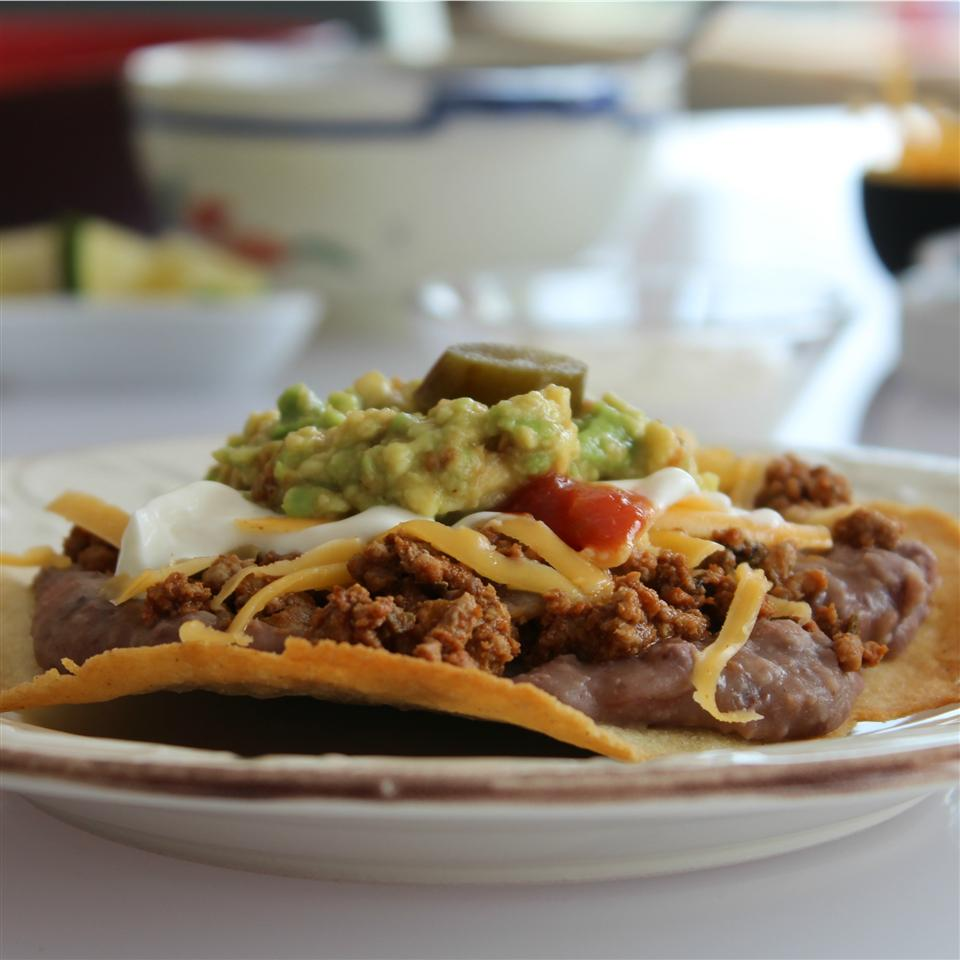

Crispy Oven Tostada

Easy to Make
This pretty simple recipe helps you make a good tostada with a layer of beans and ground beef.
Ingredients
- 1/2 Teaspoon garlic salt
- 1/2 Teaspoon onion powder
- 1/2 Teaspoon garlic powder
- 1/2 Teaspoon ground cumin, or to taste
- 1/4 Teaspoon ground black pepper
- 1/2 Pound of ground beef
- 1/2 Cup chopped sweet onion, or more to taste
- Clove garlic, minced
- 6 Corn tortillas
- 2 Tablespoon vegetable oil
- 2 Cups refried beans
- 2 Cups shredded lettuce, or as desired
- 1 1/2 Cups shredded Cheddar cheese
- 1 Tomato, diced
Steps
- Preheat oven to 400 degrees F (200 degrees C).
- Mix garlic salt, onion powder, garlic powder, cumin, and black pepper together in a small bowl.
- Heat a large skillet over medium-high heat. Cook and stir beef, onion, and garlic in the hot skillet until browned and crumbly, 5 to 7 minutes; drain and discard grease. Keep warm while preparing tostada shells.
- Brush oil over both sides of tortillas and arrange on a baking sheet.
- Bake tortillas in preheated oven until crisped on top, about 5 minutes. Flip tortillas and continue baking until other side crisps, 2 to 3 minutes more.
- Heat refried beans in a saucepan over medium-low, stirring regularly until hot, about 5 minutes
- Divide refried beans between tostadas and spread over one side of each; spoon ground beef mixture over the beans. Top each tostada with lettuce, Cheddar cheese, and diced tomato.